查找细节
回忆上节课内容🤔
- 进行了模式匹配批量替换的的操作
- 替换单词
:%s/\<a.*d\>/oeasy/g
- 转义字符
%s/^\/\/.*$/d
- 删除空行
:g/^\s*$//d
- 还有替换还有一些什么玩法吗？🤔
前后颠倒
markdown变html
- 要把
markdown文件中的*斜体* - 变成
html中的<em>斜体</em> - 先写框架
s///gc- 修改基本框架
s/\*.*\*//gc- 匹配模式
- 先试一下，是否有高亮匹配
- 如果没有就
:se hls
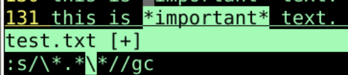
原子化
:s/\*\(.*\)\*//gc- 给待替换部分加上括号
- 将其明确
- 将其原子化
- 给括号转义
- 看是否能匹配
- 给待替换部分加上括号
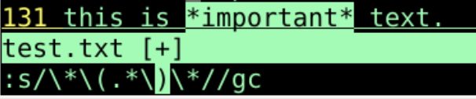
- 仍然能够查找到
- 下面就是替换部分
:s/\*\(.*\)\*/<em>\1</em>/gc\1就是括号中的原子内容- 把待替换模式放上去
s/\*\(.*\)\*/<em>\1<\/em>/gc- 将需要转义的内容转义
- 回车，替换成功！
使用参数
- 还是把html文件转化为md文件
- 我需要把
<h1>替换为- 空格- 先搜索
/<h1>，可以搜到，说明尖括号不用转义 - 再搜索
/<h1>.*</h1> - 可以匹配
- 先搜索
- 开始写
:%s///gc- 上框架
:%s/<h1>.*</h1>//gc- 基础内容
:%s/<h1>(.*)</h1>//gc- 加括号
:%s/<h1>\(.*\)<\/h1>//gc- 转义
:%s/<h1>\(.*\)<\/h1>/- \1/gc\1就是搜索中用转义括号括起来的东西
- 如果要把
<h2>替换为-怎么办？ - 如何修改
:%s/<h2>\(.*\)<\/h2>/ - \1/g
替换空格
- 在markdown文件中
- 如果链接中有空格
- 则链接失效
- 我们需要把空格替换为%20
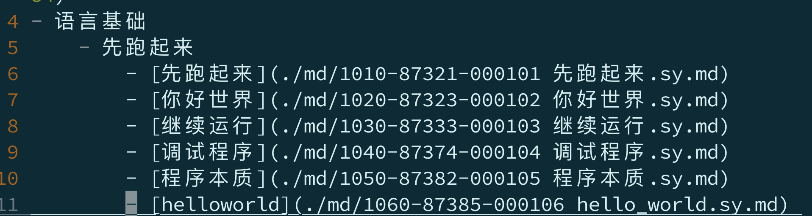
- `6,11s/(\d{5}-\d{6}) /\1%20/gc
- 6,11s 在6-11行进行substitute替换
\(\d\{5}-\d\{6}\)- 前面五个数字
- 横杠-
- 后面六个数字
- 空格
- 括号把空格前面的数字和横杠原子化
\1%20- 把原子化内容放回来
- 空格变成%20
- 可以优化么？
优化
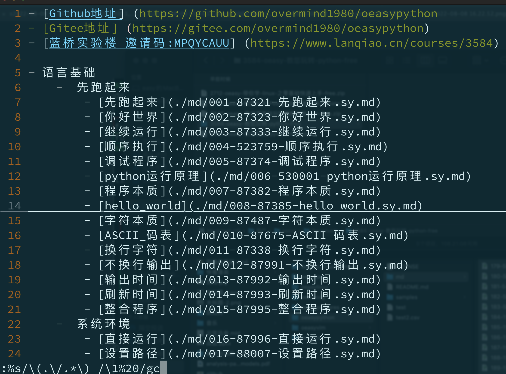
:%s/\(.\/.*\) /\1%20/gc\(.\/.*\)- 以
./开头的任意多个字符(.*) - 后跟一个空格
- 以
\1%20- 把
./开头的任意多个字符(.*)放回来 - 空格变成%20
- 把
- 如果有多个字符就多替换几次
多个参数
- 原来的列表
Joe,Johnoeasy,oyeah
- 需要的列表
John Joeoyeah oeasy
- 需要前后对调，还要去掉逗号
%s///gc:%s在所有的范围内
%s/.*,.*//gc- 中间有逗号分开
%s/(.*),(.*)//gc- 用括弧原子化
%s/([^,]*),([^,]*)//gc- 括弧里的原子中不能有逗号
%s/\([^,]*\),\([^,]*\)//gc- 转义
\([^,]*\),\([^,]*\)原来的列表([^,]*\)前面的第一个原子，内容为除了逗号之外的字符,分隔符逗号([^,]*\)前面的第二个原子，内容为除了逗号之外的字符
- 高亮显示匹配的话
:%s/\([^,]*\),\([^,]*\)/\2 \1/gc\2 \1- 把原来的两个原子前后对调
- 中间加上空格
- 完成对调
如果是a标签呢？
<a href="http://oeasy.org">o</a>变成[o](http://oeasy.org)- 这里面需要两个参数
- 链接网址
http://oeasy.org - 链接文本o
- 链接网址
- 尝试搜索
/<a href=.*>.*</a>不可以搜素到
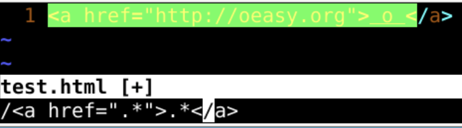
/<a href=".*">.*<\/a>可以搜素到，说明/需要转义
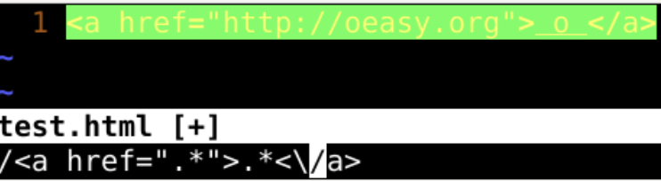
- 给
/<a href="(.*)">(.*)<\/a>把括号、斜杠、引号前面加上转义字符\/<a href=\"\(.*\)\">\(.*\)<\/a>
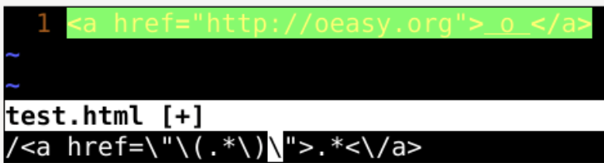
进行替换
- 然后写批量替换
:%s///gc- 框架
%s/<a href=\".*\">//gc%s/<a href=\".*\">.*<\/a>//gc- 有高亮匹配，证明模式ok
%s/<a href=\"(.*)\">(.*)<\/a>//gc- 参数原子化
%s/<a href=\"\(.*\)\">\(.*\)<\/a>//gc- 转义
%s/<a href=\"\(.*\)\">\(.*\)<\/a>/[\2](\1)/gc\1对应第1个小括号里面匹配的东西\2对应第2个小括号里面匹配的东西- 然后就可以进行批量替换了
问题
<a href="http://oeasy.org">o</a>asdf<a href="http://oeasy.org">o</a>- 这句话有两个超链接
- 但是替换之后
- 却变成了一个超链接
- 这怎么办？
- 贪婪匹配与非贪婪匹配
.*对应的是贪婪匹配 greedy.{-}对应的是非贪婪匹配 non-greedy- 会匹配第一个符合条件的
- 什么是贪婪匹配？
贪婪匹配
- 把
md中的**重点文字**和**重点** - 变成
html中的<strong>重点文字</strong> - 注意他把这两个分开了
\*\*.\{-}\*\*\*\*代表前两个星号.的数量是\{-}\*\*代表后两个星号
.的数量是\{-}
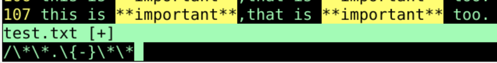
- 根据这个我们来写替换语句
:s///gc:s/**(.*)**//gc- 给需要转义的字符转义
:s/\*\*\(.*\)\*\*//gc- 思路就是
把.*变成.\{-} - 把贪婪变成非贪婪
- 思路就是
:s/\*\*\(.\{-}\)\*\*//gc- 把替换的元素放上
:s/\*\*(.\{-})\*\*/<strong>\1<\/strong>/gc- 尝试一下
- 根据这个，是否能解决一行中有多个
<a>元素的问题
匹配模式
:%s///g:%s/<a href=\".*\">.*<\/a>//g:%s/<a href=\"(.*)\">(.*)<\/a>//g:%s/<a href=\"\(.*\)\">\(.*\)<\/a>//g:%s/<a href=\"\(.\{-}\)\">\(.\{-}\)<\/a>//g- 这步就是
把.*变成.\{-}
- 这步就是
:%s/<a href=\"\(.\{-\})\">\(.\{-\}\)<\/a>/[\2]\1/g
如果是 标签呢
标签呢
- 需要把
<img src="http://oeasy.org/o.png" title="o" />替换为 - 先尝试匹配
/<img src=\"\(.*\)\" title=\"\(.*\)\" \/>- 也就是
/<img src="(.*)" title=(.*)">给引号、括号、斜杠都加上转义/ - 匹配成功之后开始替换
:%s/<img src=\"\(.*\)\" title=\"\(.*\)\" \/>/[!\2]\1- 如果一行有多个img怎么办？
- 还得把贪婪的变成非贪婪的
- 最多可以有多少个参数呢
参数数量
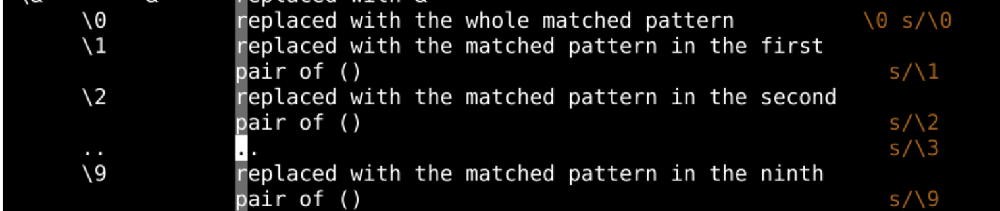
- \0是整个匹配的模式
- \1-\9都是括号里面匹配的模式
手册案例
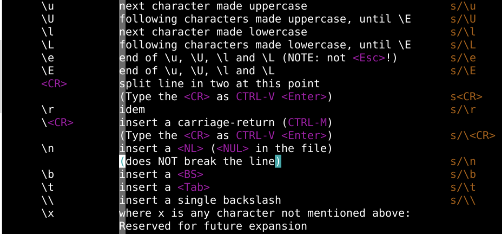
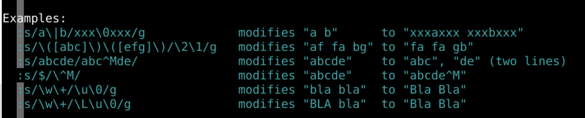
练习
地势坤000000
地雷复000001
地水师000010
地泽临000011
地山谦000100
地火明夷000101
地风升000110
地天泰000111
雷地豫001000
震为雷001001
雷水解001010
雷泽归妹001011
雷山小过001100
雷火丰001101
雷风恒001110
雷天大壮001111
水地比010000
水雷屯010001
坎为水010010
水泽节010011
水山蹇010100
水火即济010101
水风井010110
水天需010111
泽地萃011000
泽雷随011001
泽水困011010
兑为泽011011
泽山咸011100
泽火革011101
泽风大过011110
泽天夬011111
山地剥100000
山雷颐100001
山水蒙100010
山泽损100011
艮为山100100
山火贲100101
山风蛊100110
山天大畜100111
火地晋101000
火雷噬嗑101001
火水未济101010
火泽睽101011
火山旅101100
离为火101101
火风鼎101110
火天大有101111
风地观110000
风雷益110001
风水涣110010
风泽中孚110011
风山渐110100
风火家人110101
巽为风110110
风天小畜110111
天地否111000
天雷无妄111001
天水讼111010
天泽履111011
天山遁111100
天火同人111101
天风姤111110
天行健（乾）111111
- 要把这对应关系做成python字典的形式
- 应该怎么办？
总结
- 我们学习了关于模式匹配中使用参数
- 别着急
- 先列框架
- 在一步一步填充进去皮肉
- 注意转义
- 冷静仔细
- 不断看着高亮的反馈
- 单个参数
:%s/<h2>\(.*\)<\/h2>/ - \1/g
- 多个参数
:%s/<img src=\"\(.*\)\" title=\"\(.*\)\" \/>/[!\2]\1
- 非贪婪匹配
:%s/<a href=\"\(.\{-\})\">\(.\{-\}\)<\/a>/[\2]\1/g
- 我们介绍一种更神奇的模式，可视化编辑模式🤔
- 下次再说 👋
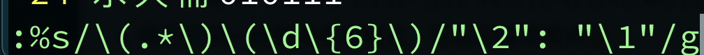